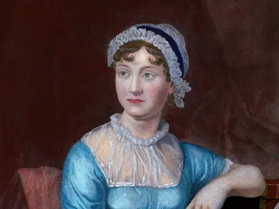
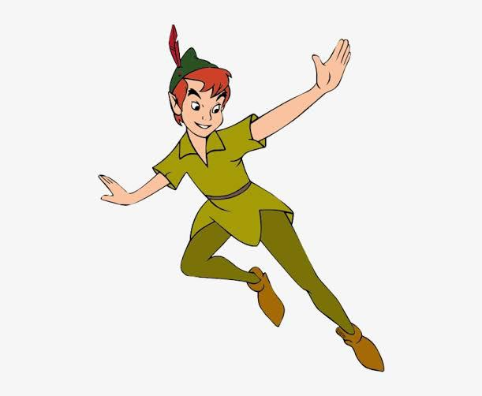
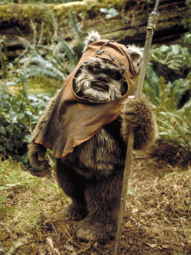
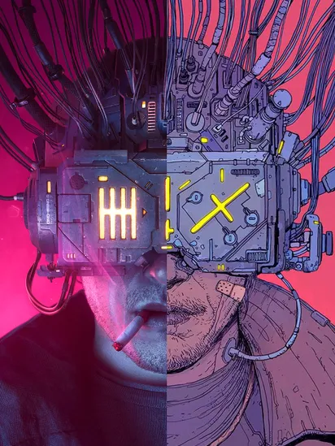

An estimate of one hundred billion galaxies, some three hundred billion stars in the milky way alone with around thirty billion planets with all of them revolving in perfectly set orbits, with a mere 7,714,576,923 people inhabiting this marvelous expansion. I'd say that the odds are against it.
The answers, presumptions or even the 'this-is-beyond-us' statements to the question of life beyond Earth have be traced back to the ancient times, but were, by all means stories of 'three eyed aliens' told by fatigued mothers of children not wanting to go to sleep.
Thankfully, that's not the case today.
Mostly.
There have been various candidates for what would be the next whereabouts for life and there is none other than the red planet to start off with.
The crazy obsession that earthians have with Mars is because when after a series of failures, July 1965 saw its first flybys of Mars, the US Mariner 4 became the first spacecraft to take close up pictures of Mars. That's it.
We were hooked to our universal neighbor for any signs of life. Mars is known to have the three critical ingredients for the recipe of life. It has an abundance of chemical building blocks, liquid water and volcanic activity as an energy source.
Though the surface is inhospitable, the possibility of life existing deep beneath its frozen surface cannot be ruled out. Also, nobody really said that Martians have to be humans, right?
A couple light years beyond, the icy moon of Jupiter Europa has unthinkable potential. For starters, it has a layered structure like Earth: an iron rich core, a rocky mantel and a crust of ice. It can be considered as a dissimilar twin to the sea ice in Antarctica. Finally, for desert, in 2022 both the ESA (European Space agency) and NASA plan to launch a spacecraft that will get up close to Europa for this very purpose.
Who knows? We might get to witness the next space race!
When being habitable doesn't really make a place a habitat, the possibility of 'what if' can never be waived. For when the head scratching early humans invented the first wheel, they never expected automatic cars to hit the roads.
But that's the refinement of the unknown void we call 'future' isn't it? A black, white or probably even a pink canvas waiting to be hued by the colors of inventions, realization of earlier ideas and the beginning of newer ones.
For who knows millions of light years away, there would be people, just like us, thinking, is life beyond their planet possible?
- Jahnavi Mahajan
Hi, I am Jahnavi and i like to write about cool stuff.
c l a s s i c
post
Not All Abbeys Are Haunted.

POTRAIT OF JANE AUSTEN
Not all abbeys
are haunted. Not all women who succumb to sudden death owe it to their husband's hidden malice.
Not everybody's life is a late 1700's gothic saga. It's okay if General Tilney is a villain of “normal life” than one of “romance.” Most people are.
Reading Northanger Abbey was like talking to a friend, being let into all the witty inside jokes of the enlightened society as we silently laughed at imperfect idealization of society. I have never wanted to befriend a particular person in my life, until now. I desperately want to be Jane Austen's friend.
And since good friends hold each other's' offices in high regard, and since I am a self-proclaimed book-reviewer-talking-to-myself-but-in-writing, we need to talk about the title of the book. Even though Northanger Abbey tastes expensive and rolls of the tongue like wine, “Catherine,” as Austen had first intended, deserved to be the title of the novel. The satire of the overwhelming gothic culture starkly detectible through the innumerous subtle and direct allusions sprinkled across the pages is indeed a main takeaway of the novel (alluding to the present title), but it isn't the only one.
This story is Catherine's story and has so much to more to say. I feel like Austen sat down one day and decided to lash out, in the most sophisticated way possible, at everything she saw out of place in that age's novels and came out with a response masterpiece of her own. After reading the novel, it is clear why Austen deemed appropriate to release an announcement before the reattempt at publication.
If released on time, it would have hit the iron still hot.
But it's not in vain, because the novel is brilliant.
Her take on the “masculine powers” in novels during that time is so intelligibly put through the character of Catherine. Catherine is the literary response to everything men got wrong about woman in their novels.
Feminism is a term I do not associate with anymore, because its true spirit peaked long before I was born.
In Jane Austen novels, to be precise.
Richardson laid out in The Rambler "that no young lady can be justified in falling in love before the gentleman's love is declared," and Austen's Catherine breaks this rule without suffering. Not all heroines are blessed with remarkable wit, unparalleled beauty, and predisposed grace.
Contrary to popular believe, relatable and quirky characters are not the ones that build a strong novel. “Unrelatable characters make great novels.”
I have learnt to scoff at the naivety of Catherine and the appreciate her unexpected bold takes. Turns out, flawed and simple characters are not just to be side-lined as plot promoters. Even though the novel didn't seem as enthralling as others I've read, I certainly learned to appreciate once I understood the depth that could be conveyed through the simplicity of characters and plot.
You see, in such cases, it's the reader more than the author who has to make the effort of making the character interesting and worthwhile.
What I loved about it, and what most people would fail to appreciate is that the central love story of the novel (which would almost seem as the central plot of the novel at first appearance and many times during the read) isn't like the usual love stories. It's bad, to be frank. Apart of the initial meeting in the pump room and the anticipation leading to the second encounter, the building love seemed bland, normal, and real. Not all love stories are about bold defiance, neurotic connections, and heart wrenching fates. Some stem from unwarranted interest and unexpected kindness, is all.
Though, I do not want to ignore Henry and Catherine's passion completely. Henry's visit to Fullerton and their shared indulgence in sarcasm were cute.
Jane Austen took Catherine and made her a masterpiece by screaming at all the fairy tales of late 1790's that, “MY CHARACTERS ARE REAL.” Jane Austen does not get enough credit for her humour. Catherine's musings about the chest being a centrepiece of a horror story was hilarious, especially because of the narrative Henry had built up (granted, in very good humour) during their travels.
Also, another interesting thing was the conspicuous mention of time and General Tilney's hold of it. The making of the 18th century as the era of the clock' is very apparent. It also builds upon my claim that the one who controls the time, controls the situation.
Isabella saddened me, more than disappointing me. Her abnegation towards James felt real and her betrayal, though it could be seen coming later on, stung, because it exemplifies that people who are capable of getting too close to you in a short span are also capable of getting away. Again, this helps solidifying my point about time. Time is the real test of all relationships, no matter how strong them might seem in the earlier moments as displayed by Isabella's friendship with Catherine.
This novel felt like a calming read instead of the usual burn, and this feeling has been underappreciated by me. This was nice (heh).
“There is nothing people are so often deceived in, as the state of their own affections…” The more I think about it, autobiographically too, I am more convinced of its candour. When you take a step back from the blur of feelings, you can logically put into place the true value of relationships.
Finally, Northanger Abbey was a story about a girl transitioning into society and we got to view Catherine grow up in the span of a few months alone. I guess the point I'm trying to make is that singular experiences and trips can change you more than years can. I guess, time's beaten here. The self is more impressionable that the other, but forevermore trustable.
- Jahnavi Mahajan
Hi, I am Jahnavi and i like to write about cool stuff.
f a n t a s y
post
To Die Will Be An Awfully Big Adventure.

PETER PAN BY JAMES MATTHEW BARRIE
“To die will
be an awfully big adventure.”
The Neverland is open, as long as children are gay and innocent and heartless.
“Do you believe in fairies?” I do.
It stuck with me, this thought that each time you breathe in Neverland, a human dies. And each time a human says that they don't believe in fairies, a fairy dies.
It shows how the world real and imaginary are constantly grappling at each other for existence. Complex numbers are not too real in the world of mermaids.
Peter Pan is a beautiful character. And it yields to the matter that everything beautiful is deeply flawed. Peter never wanted to grow old. He never wanted to grow a beard. He never wanted to go to an office. Because when your heart is old and grizzly, adventure becomes a self-imposed burden rather than a way of life. You don't want to take the mysterious path wrapped in golden dust in the dark alleyway, you want to go straight back home to the kids and the TV. Also, you don't fly thinking happy thoughts, you fly using pixie dust.
Peter didn't lose Wendy, he saved himself. To accept Mrs. Darling's embracing hand was to leave the whimsical hold of adventure. It's not that he didn't care for Wendy, or the lost boys. He adored them, but he adored himself more. You see, for Peter, it was easy to drown the fleeting sorrows of a very unfortunate separation beneath the crashing surf of his latest sea endeavor.
He was certainly one brave boy too. A bit on the mad side. The knight in skeletal-leaf armor that every woman would become a damsel for. Tinkerbell. The tiger lily. Wendy.
I don't know a lot of people, but I assume people would disdain Peter for being self-absorbed. But I think that was absolutely necessary. It's not that he didn't care for others, he did. He just that he didn't love them. Because to love is to fall. To fall is to not fly. And why in the Never world would one give flying.
You see, any relationship you might have holds you back. You can't go on scary adventures, the one that chill you down to your nethermost nerves, lest you might die or your relation might die.
Captain Hook is de facto a very reasonable character. I wouldn't even call him a villain, he was smart (and I am biased towards pirates). The crocodile who swallowed the ticking clock is one of the best metaphors I've ever read. It's the slow approaching death that sounds throughout life but is silent moments before it happens. It's the indication that time is the ultimate destroyer of everything. Captain Hook was rashly smart. His plan to attack, instead of defending, ill-planned (if you don't know the plan, the redskins won't either) and poisoning Peter in his sleep. But Hook's compliance to the form, realizing that he was in bad form and detesting himself for it is a sign of being very human. You see, it's the villains with no rules, no inhibitions, no morals, that are the wickedest of them all.
Neverland is wonderful. But I guess every place that has agoraphobic mermaids will be. But it is a place for children. Because the adults will tell you to be careful. It's how Wendy grew up and stopped believing and remembering. What's the point of being welcomed into Neverland when you'll say “wow” for a couple minutes and then ask for a chair to sit down.
I don't want to grow if it means I would no longer be welcome to Neverland. I want to stay a child at heart and not feel like I'm eighty-three and not get dizzy on rollercoasters. I don't want to do something that does not somehow lead me to mermaids and pretty lagoons. And they say Peter Pan is a children's classic (pft).
I'm never leaving Neverland.

- Jahnavi Mahajan
Hi, I am Jahnavi and i like to write about cool stuff.
s c i e n c e.......f i c t i o n
post
Cyberspace - A Consensual Halluciantion

THE NEUROMANCER BY GIBSON
“The matrix has its roots in primitive arcade games. … Cyberspace. A consensual hallucination experienced daily by billions of legitimate operators, in every nation, by children being taught mathematical concepts. … A graphic representation of data abstracted from banks of every computer in the human system. Unthinkable complexity. Lines of light ranged in the non space of the mind, clusters and constellations of data. Like city lights, receding.”
This.
There couldn't have been a better beginning for the epic Cyberpunk novel than in the dystopian underworld of Chiba city. Japan is definitely the place where I imagine this happening.
The matrix is a dataspace of virtual reality. Molly was an augmented character. Why does nobody understand how precious this truly is.
“Measure twice, cut once, a wise man put it.” (solicited advice)
Its mind-blowing how William Gibson coined the perfect name for the world wide web years before it even existed. Shows how powerful science-fiction, specifically Cyberpunk SF is not only in moving imagination, but real hands on the workbenches in labs.
“The sky above the port was the color of television, tuned to a dead channel.” Probably one of the best beginnings I've ever heard.
Also, can we appreciate Peter Riviera's ability for illusion holographs? So cool.
Jack Womack said that Cyberpunk in the long run served, only to provide a facile adjective for the working vocabulary of lazy journalists and unimaginative blurb-writers.
I say, its time people realize the magnificence of Cyberpunk as the big thing of the 21st century. Verne and Wells are the people I admire. God. This.
- Jahnavi Mahajan
Hi, I am Jahnavi and i like to write about cool stuff.